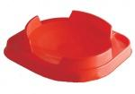

BeyStadium Balance Type
| BeyStadium Balance Type | |
|  | |
| Number: | BB-14 |
|---|---|
| System: | Metal Fight Beyblade |
Dimensions
Diameter: 48.3 cm; 39 cm
Slope Diameter: 23 cm
Flat Center Length: 8.8 cm
Wall Length: 19 cm
Exit Length: ~12 cm
Depth: 3 cm
Pocket Width: 4.5 cm
Pocket Length: 10 cm
Pocket Depth: 1.5 cm
Slope: ~30°
Available Products
- BB-14 BeyStadium Balance Type (Red)
- BB-20 Beybattle Try Set (Red)
Gallery
Overall
Formed almost like an oval, the BeyStadium Balance Type generally resembles a larger BeyStadium Attack Type, even though its design has many considerable differences. Firstly, the oval shape is due to two pockets located at opposite sides of the Stadium: one that is present for half the length of one of the three exits, and another which is positioned right behind one of the three walls. Despite only one of the two pockets being realistically accessible, both are considered legal play area under TAKARA-TOMY's rules. Within the World Beyblade Organization's rules however, since it is almost always impossible for a Beyblade to bounce back inside the actual stadium's area, as soon as the Beyblade enters the pocket, it is considered knocked out.
Secondly, the BeyStadium Balance Type possesses no Tornado Ridge, and there are no ridges around the Stadium close to the exits either. This feature is probably meant to facilitate the access to the one pocket that can be entered, however this of course leaves two relatively big exits unrestrained, which greatly hinders Beyblades' performances in this Stadium. Particularly, Attack types, which have a tendency to self-KO with ease in this stadium.
Thirdly, this Stadium actually has a flat center, unlike the BeyStadium Attack Type. Attack combinations are consequently halted in their aggressive pattern, and they have difficulty gaining the momentum back to climb up the slope again, like in a Sliding Shoot's flower pattern. It therefore advantages both calm Defense and Stamina customizations by providing them a haven in which Attack customizations are momentarily destabilized. However, fortunately, this flat center is not nearly as wide as the BeyStadium Stamina Type's.
Overall, with the exception of the BeyStadium Triple Battle Type which is, in essence, extremely similar in design to the BeyStadium Attack Type, the Super Control BeyStadium and HMS' Tornado Attack Stadium, the BeyStadium Balance Type is still considered among the fairest BeyStadiums for competitive Beyblade play, especially in Metal Fight Beyblade. It should however only be purchased if all better options are unavailable.
A more easily accessible 'version' of the BeyStadium Balance Type was made within the BeyStadium Standard Type: in fact, the red floor included in this product is meant to be a portable and cheaper way of playing in a 'Balance Type' arena. The pockets, though, are not included in its design, and the set of walls can be changed to make the exits wider or smaller. In other words, it is only the inner portion within the walls of the BeyStadium Balance Type that TAKARA-TOMY looked to reproduce.